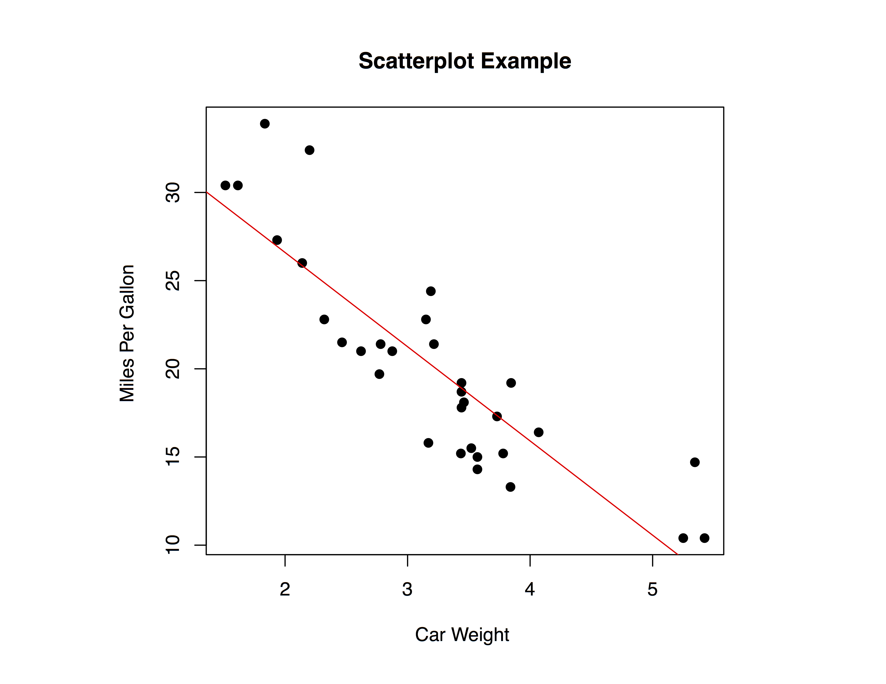

34 Contingency tables and bivariate data
It is very common that a question relies on a discussion of the relationship between two variables.
What type of variables?
Age and Vote Intentions
Party Ideology and Party Desire to Form Coalitions
Income groups and Spending on Alcohol
34.1 Discrete by Discrete Data Display
Assume the two variables of interest are both countably discrete.
To examine the relationship between these variables, we will use .
A contingency table is used to plot membership by groups.
| Democrat | Republican | |
|---|---|---|
| Male | 36 | 56 |
| Female | 43 | 22 |
- Here we see that women are more likely to be Democrats than men.
34.2 Contingency Tables
The same contingency table with row percentages.
Does it make more sense to percentagize by sex or vote in the previous table?
General rule: percentagize by the independent/ explanatory variable. Below we do it by gender (i.e. by row).
| Democrat | Republican | |
|---|---|---|
| Male | 39.1% | 60.9% |
| Female | 66.1% | 33.9% |
- Note that the percentages add up to 100 on each row, not over each column.
34.3 Creating Contingency Tables in R
Recall: Contingency tables take factors. If it is not a factor, you will need to convert it (see the chapter on average treatment effects.)
Code like this will give you a contingency table:
# Frequency
freq.tab <- with(data, table(factor1, factor2))Code like this will give you a contingency table with percentages:
#Percentage
with(data, round(prop.table(freq.tab)*100, 2))Code like this will conduct the \(\chi^2\) test for independence:
# Chi-Square
chisq.test(freq.tab)34.4 Discrete by Continuous Displays
When we have one discrete variable and one continuous
- Rely on some of the methods that we have used previously!
Options:
boxplots for each group;
histograms for each group;
plot the distribution of observations for each group.

You can make plots like this using the boxplot() function:
boxplot(y~x,data = dataset,
xlab = "Informative X label",
ylab = "Informative Y label",
main = "Informative Title",col = c(col1, col2, ....))34.5 Continuous By Continuous Displays
If we want to examine the relationship between two continuous variables graphically, we will utilize a scatterplot.
- Income by Age
- Income by Ideology (21-point scale)
- Note: when ordered categories are plenty enough, consider them as continuous

plot(x, y, data = dataset,
main = "Informative Title",
xlab = "Informative X label",
ylab = "Informative Y label",
pch = 19) 34.6 The value of Scatterplots
Scatterplots allow us to assess the direction and strength of a relationship between 2 variables.
3 types of relationships:
Positive: As x increases, y also increases.
Negative: As x increases, y decreases.
No Relationship: There is no relationship between the variables.
34.6.1 In R, we can only make scatterplots with numeric variables!
- Check whether the variable is numeric using code like this:
str(datasetname$variableofinterest)
is.numeric(datasetname$variableofinterest)- If your variable is not numeric in structure but convertible to be numeric, such as numbers as factor levels or numbers as characters within quotation marks, we can convert it to a numeric variable (only if it makes sense):
datasetname$newvariable <- as.numeric(datasetname$variableofinterest)